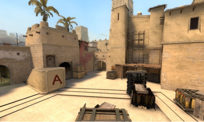
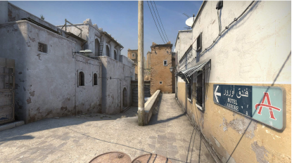

MIRAGE CS:GO
A história da Mirage começou em 2002 com Bubkez, jogador de Quake. O sueco foi o criador da de_CPL_Strike, primeira edição da história do mapa. Mirage é um dos mapas mais famosos e também mais utilizado em torneios. Desde seu lançamento no CS:GO em 2013 ele já caiu no gosto do público e inclusive foi palco da jogada épica de Coldzera em 2016 durante a Major, o 4k pulando de AWP lhe rendeu até um grafite dentro do mapa. História a parte Mirage é um mapa cheio de lugares e táticas para serem usadas. Conheça um pouco mais sobre a Mirage a seguir:
História da MirageDUST 2 CS:GO
Lançado em 13 de março de 2001, Dust 2 apresentou como base um formato simples e extremamente atrativo para os players.A ideia do criador, David Johnston, veio de um mapa de outro jogo da Valve: Team Fortress 2. Seu lançamento aconteceu na versão 1.1 do CS e desde lá chamou a atenção de toda a comunidade. Esse interesse da parte competitiva da playerbase era algo que seu antecessor nunca havia conseguido atingir e, foi nesse ponto, que o Dust 2 tornou-se o maior mapa da história. Conheça um pouco mais sobre a Dust 2 a seguir:
História da Dust 2